Data Structures and Class Methods in scuff-em
This page is intended to serve as a starting point for hackers seeking to understand, or extend, the nitty-gritty implementation details of the scuff-em core library.
More technical details may be found in the libscuff Implementation Notes and Technical Reference, available as a PDF document.
- Geometries, Regions, Surfaces
- Panels, Edges, Vertices
- Assembling the BEM Matrix
- An Explicit Low-Level Example
Data Structures and Class Methods in scuff-em
1. Geometries, Regions, Surfaces
The top-level data structure in libscuff
is a C++ class named RWGGeometry. The definition of this class is a
little too big to present in full here (you can find it in the
header file libscuff.h), but we will point out its
most important data fields and class methods.
Geometries in scuff-em are represented a collection of two or more contiguous three-dimensional regions bounded by one or more two-dimensional surfaces. Material properties (permittivity and permeability) are homogeneous (spatially constant) in each region and described by a single scuff-em material description.
Each region is assigned an integer index starting from 0.
The RWGGeometry includes the following data fields for
identifying physical regions.
class RWGGeometry
{
...
int NumRegions;
char **RegionLabels;
MatProp **RegionMPs;
...
};
Here RegionLabels[i] is a string description for the
ith region in the problem, and RegionMPs[i] is
a pointer to an instance of MatProp describing its
frequency-dependent material properies. (MatProp is
a very simple class, implemented by the
libmatprop submodule of scuff-em, for
handling frequency-dependent material properties.)
RWGGeometry always starts off with a single
region (region 0) with label Exterior
and the material properties of vacuum.
Each REGION statement in the
.scuffgeo file
then creates a new region, starting with region 1.
(This is true unless the label specified to the REGION
keyword is Exterior, in which case the
statement just redefines the material properties of region 0.)
Each OBJECT...ENDOBJECT section in the .scuffgeo
file also creates a single new region (for the interior of the object).
Regions in a geometry are separated from one another by surfaces.
Each surface is described by a C++ class named RWGSurface.
The RWGGeometry class maintains an internal array of
RWGSurfaces:
class RWGGeometry
{
...
int NumSurfaces;
RWGSurface **Surfaces;
...
};
Each OBJECT...ENDOBJECT or SURFACE...ENDSURFACE
section in the .scuffgeo file adds a new RWGSurface
structure to the geometry. (Note that, in scuff-em
parlance, an "object" is just a special case of a surface in which the
surface is closed.)
The RWGSurface class is again slightly
too complicated to list in full here, but we will discuss its most salient
fields and methods. Among these are the RegionIndices field:
class RWGSurface
{
...
int RegionIndices[2];
...
};
These two integers are the indices of the regions on the two sides of the
surface. The first region (RegionIndex[0]) is
the positive region for the surface; this means that the electric
and magnetic surface currents on the surface contribute to the fields
in that region with a positive sign. The second region
(RegionIndex[1]) is the negative region; currents
on the surface contribute to the fields in that region with a negative
sign.
Another way to think of this is that the surface normal vector
n points
away from RegionIndex[1]
and
into RegionIndex[0].
2. Panels, Edges, Vertices
The mesh describing each surface in a geometry is structure is analyzed
into lists of vertices, triangular panels, and panel
edges. Several internal data fields in the RWGSurface
class are devoted to storing this information.
class RWGSurface
{
...
int NumVertices;
double *Vertices;
int NumPanels;
RWGPanel **Panels;
int NumEdges;
RWGEdge **Edges;
...
};
Here Vertices is an array of 3*NumVertices
double values in which the cartesian coordinates of each
vertex are stored one after another. Thus, the x, y, z
coordinates of the nvth vertex are
Vertices[3*nv+0], Vertices[3*nv+1], Vertices[3*nv+2].
Panels and Edges are arrays of pointers
to specialized data structures for storing geometric data.
The RWGPanel and RWGEdge structures
The elemental data structure in the scuff-em
geometry hierarchy is RWGPanel. Each instance of this structure
describes a single triangular panel in the mesh discretization of an
RWGSurface.
RWGPanel definition
typedef struct RWGPanel
{
int VI[3]; /* indices of vertices in Vertices array */
int EI[3]; /* indices of edges in Edges array */
double Centroid[3]; /* panel centroid */
double ZHat[3]; /* normal vector */
double Radius; /* radius of enclosing sphere */
double Area; /* panel area */
int Index; /* index of this panel within RWGSurface */
} RWGPanel;
Here the elements of the VI array are the indices of the
three panel vertices within the list of vertices for the given
RWGSurface. The Index field in RWGPanel
indicates that panel's index within the Panels array
of the parent RWGSurface. The remaining fields tabulate some useful
geometric data on the panel.
In addition to an RWGPanel structure for each triangle
in the surface mesh, we also create an RWGEdge structure
for each panel edge.
RWGEdge definition
typedef struct RWGEdge
{
int iV1, iV2, iQP, iQM; /* indices of panel vertices (iV1<iV2) */
double Centroid[3]; /* edge centroid */
double Length; /* length of edge */
double Radius; /* radius of enclosing sphere */
int iPPanel; /* index of PPanel within RWGSurface (0..NumPanels-1)*/
int iMPanel; /* index of MPanel within RWGSurface (0..NumPanels-1)*/
int PIndex; /* index of this edge within PPanel (0..2)*/
int MIndex; /* index of this edge within MPanel (0..2)*/
int Index; /* index of this edge within RWGSurface (0..NumEdges-1)*/
RWGEdge *Next; /* pointer to next edge in linked list */
} RWGEdge;
The iQP, iV1, iV2, iQM fields here are indices into the
list of vertices for the parent RWGSurface.
iV1 and iV2 are the actual endpoints of the edge.
iQP and iQM denote respectively the current
source and sink vertices for the RWG basis function corresponding
to this edge.
iPPanel and iMPanel are the indices (into the
Panels array of the parent RWGSurface) of the
positive and negative panels associated with the edge.
(The positive panel is the one from which the RWG current emanates;
its vertices are iQP, iV1, iV2.
The negative panel is the one into which the RWG current is sunk;
its vertices are iQM, iV1, iV2.)
The iPPanel and iMPanel fields take values
between 0 and NumPanels-1, where
NumPanels is defined in the parent RWGSurface.
PIndex and MIndex are the indices of the edge
within the positive and negative RWGPanels.
(The index of an edge within a panel is defined as the index
within the panel of the panel vertex opposite that edge; the
index of a vertex is its position in the VI array in the
RWGPanel structure.)
The Index field of RWGEdge is the index of
the structure within the Edges array of the parent
RWGSurface.
The remaining fields store some geometric data on the edge.
The Centroid field stores the cartesian coordinates
of the midpoint of the line segment between vertices V1
and V2.
Here's an example of two panels (panel indices 17 and
39) in a surface mesh, and a single
edge (edge index 24) shared between them.
Panel 17 is the positive panel for the edge,
while panel 39 is the negative panel for the edge; the corresponding
direction of current flow is indicated by the arrows.
The larger red numbers near the vertices are the indices of those
vertices in the Vertices array.
The smaller magenta and cyan numbers are the indices of the vertices
within the VI arrays in the two RWGPanels.
(The other four edges of this panel pair would also have corresponding
RWGEdge structures; these are not shown in the figure.)
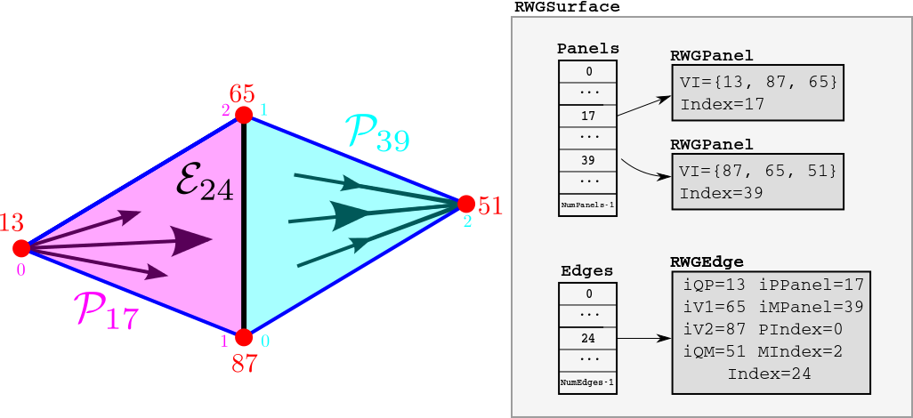
3. Assembling the BEM Matrix
The RWGGeometry class contains a hierarchy of
routines for assembling the BEM matrix. If you are simply
using the code to solve scattering problems, you will
only ever need to call the top-level routine
AssembleBEMMatrix or perhaps the
second-highest-level routine, AssembleBEMMatrixBlock.
However, developers of surface-integral-equation methods
may wish to access the lower-level routines for
computing the interactions of individual RWG basis functions
or for computing certain integrals over triangular regions.
AssembleBEMMatrix
The top-level matrix assembly routine is
AssembleBEMMatrix. This routine loops over
all unique pairs of RWGSurfaces in the geometry.
For each unique pair
of surfaces, the routine calls AssembleBEMMatrixBlock
to assemble the subblock of the BEM matrix corresponding to a single
pair of RWGSurfaces, then stamps this subblock
into the appropriate place in the overall BEM matrix.
For example, if a geometry contains three RWGSurfaces,
then its overall BEM matrix has the block structure
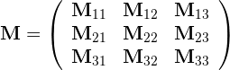
where the subblock describes the
interactions of surfaces i and j.
In this case AssembleBEMMatrix proceeds by making 6 calls
to AssembleBEMMatrixBlock, one for each of the
diagonal and above-diagonal blocks. (The below-diagonal
blocks are related to their above-diagonal counterparts by
symmetry.)
AssembleBEMMatrixBlock
AssembleBEMMatrixBlock computes the subblock of the
BEM matrix corresponding to a single pair of RWGSurfaces.
For compact (non-periodic) geometries, this amounts to making just
a single call to SurfaceSurfaceInteractions. For
periodic geometries, this involves making multiple calls to
SurfaceSurfaceInteractions in which one of the two
surfaces is displaced through various lattice vectors L to account
for the contribution of periodic images.
The contribution of the
matrix subblock computed by SurfaceSurfaceInteractions
with displacement vector L is weighted in the overall
BEM matrix by a Bloch phase factor
where k is the Bloch wavevector, i.e. we have
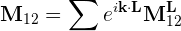
where the L superscript indicates that the corresponding matrix subblock is to be computed with one of the two surfaces displaced through translation vector L.
SurfaceSurfaceInteractions
SurfaceSurfaceInteractions loops over all RWGEdge
structures on each of the two surfaces it is considering.
For each pair of edges, it calls EdgeEdgeInteractions
to compute the inner products of the RWG basis functions
with the G and C dyadic Green's functions
for each of the material regions through which the two surfaces
interact. (Surfaces may interact through 0, 1, or 2 material
regions.)
Then it stamps these values into their appropriate places
in the BEM matrix subblock.
For example, if we have surfaces Sα and Sβ that interact through a single dielectric medium, the structure of the corresponding matrix subblock is
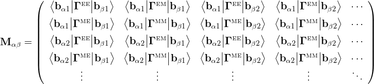
where e.g. bαm is the mth basis function on surface Sα. The kernels here are scalar multiples of the G and C dyadics:
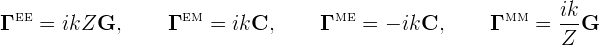
where k, Z are the wavenumber and (absolute) wave impedance of the dielectric medium at the frequency in question.
The matrix structure above is for the case of two surfaces interacting through a single material region (for example, Sα and Sβ might be the outer surfaces of two compact objects embedded in vacuum or in a homogeneous medium, in which case the surfaces interact only throught that medium). If the surfaces interact through two material regions (for example, if we have Sα=Sβ and we are computing the self-interaction of the outer surface of a dielectric object embedded in vacuum) then each matrix entry is actually a sum of two inner products, one involving the Γ kernels for the interior medium and one involving the kernels for the exterior. (If the surfaces are PEC, then the dimension of the matrix is halved with only the EE terms retained.)
EdgeEdgeInteractions
EdgeEdgeInteractions considers a pair of RWG basis
functions and computes the inner products of these basis functions
with the G and C dyadic Green's functions for a
single material medium. Because each basis function is supported
on two triangles, the full inner products involve sums of four
triangle-pair contributions:
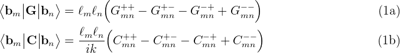
Here lm,ln are the lengths of the
interior edges to which the RWG basis functions are associated, and
each of the four terms in the sum is a four-dimensional integral
over a single pair of panels, computed by
PanelPanelInteractions.
PanelPanelInteractions
PanelPanelInteractions is the lowest-level routine in the
scuff-em BEM matrix assembly hierarchy.
This routine computes the individual terms in equation (1) above,
i.e. the contributions of a single pair of panels
to the inner products of two RWG basis functions with the G and
C dyadic Green's functions:
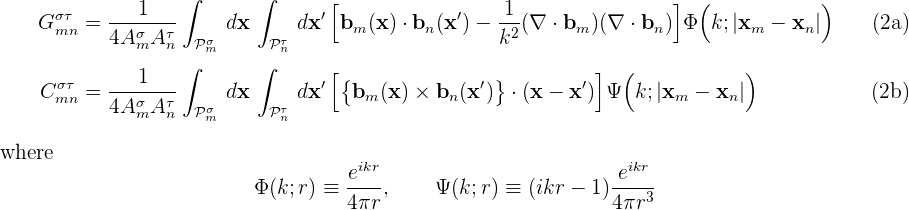
Note that the RWG basis-function prefactor l/2A is broken up into two factors between equations (1) and (2): the 1/2A part is included in the panel-panel integrals (2), while the l part is included when summing the four panel-panel contributions in equation (1) to obtain the overall inner product.
If the panels are far away from each other, PanelPanelInteractions
uses low-order four-dimensional numerical cubature to compute the full
interactions. Otherwise, PanelPanelInteractions uses
low-order four-dimensional numerical cubature to compute the interactions
with singularity-subtracted versions of the G and C
kernels, then adds the contributions of the singular terms after
looking them up in an internally-stored cache.
4. An Explicit Low-Level Example
Here's a worked example of a matrix-element computation in a scuff-em run.
The geometry and the labeling of panels, edges, and vertices
We'll consider a
scattering geometry consisting of a single cube of dielectric
material, with side length L=1 μm, discretized into
triangles with minor side length L/10, yielding a total
of 1200 triangles, 1800 interior edges, and 3600 RWG basis
functions (1800 each for electric and magnetic currents)
for a dielectric geometry. The
gmsh geometry file for this example is
Cube_N.geo,
the gmsh mesh file produced by running
gmsh -2 Cube_N.geo is
Cube_10.msh,
and a scuff-em geometry file describing
a geometry consisting of this discretized cube with interior dielectric
permittivity ε=4 is
DielectricCube.scuffgeo.
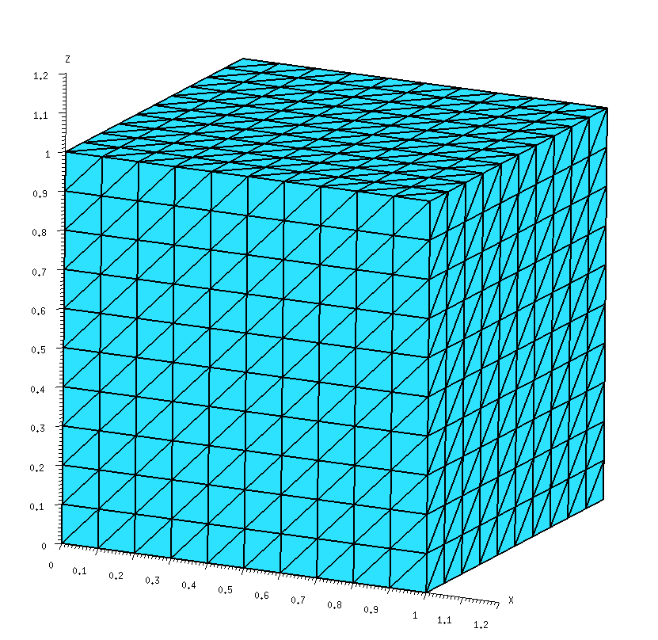
For low-level work it is convenient to have data on the internal
indices that scuff-em assigns to
panels, vertices, and edges when it reads in a geometry file.
We get this by running scuff-analyze on the mesh file
in question with the --WriteGMSHLabels options:
% scuff-analyze --mesh Cube_10.msh --WriteGMSHFiles --WriteGMSHLabels
This produces a file named Cube_10.pp, which we open in
gmsh to produce a graphical depiction of
the labeling of panels, edges, and vertices. Zooming in on the region
near the origin, we will focus on the two panels lying closest to the
origin in the xy plane; we see that
scuff-em has assigned these two panels
panel indices 0 and 1, respectively, while
the edge they share has been assigned interior-edge index 0.
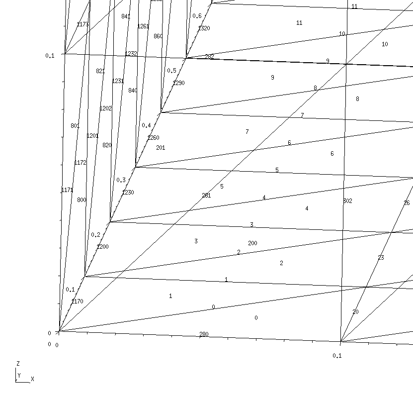
RWG basis function b0
Here's a schematic depiction of the panels that comprise the
basis function b0 associated with interior edge
0:
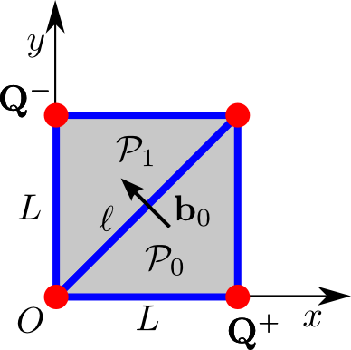
In this diagram, the edge length is L=0.1, O denotes the origin of coordinates, and the vertices marked Q± are the source and sink vertices for the current distribution. The RWG basis function b0 associated with interior edge 0 is
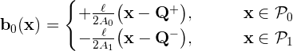
where the RWG basis function edge length is l=√2L and the panel areas are A0=A1=L2/2. Note that P0 and P1 are respectively the positive and negative panels associated with basis function b0.
Panel-panel interactions
Here's a C++ code snippet that computes the
quantities
G00++
and
G00+- in equation (1a)
above, i.e. the contributions of the positive-positive
and positive-negative panel pairs to the inner product of
b0 with itself through the G kernel,
with the wavenumber set to k=1.0;
Just to be totally explicit, the numbers that are being
computed here are
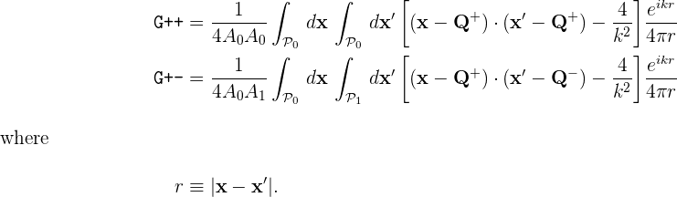
// read in geometry from .scuffgeo file
RWGGeometry *G = new RWGGeometry("DielectricCube.scuffgeo");
RWGSurface *S = G->Surfaces[0];
// initialize an argument structure for GetPanelPanelInteractions
GetPPIArgStruct MyPPIArgs, *PPIArgs=&MyPPIArgs;
InitGetPPIArgs(PPIArgs);
PPIArgs->Sa = PPIArgs->Sb = S;
PPIArgs->k = 1.0;
// fill in arguments to compute the positive-positive panel pair
PPIArgs->npa = 0;
PPIArgs->iQa = 1;
PPIArgs->npb = 0;
PPIArgs->iQb = 1;
GetPanelPanelInteractions(PPIArgs);
printf("G++ = %e + %ei\n",real(PPIArgs->H[0]),imag(PPIArgs->H[0]));
// fill in arguments to compute the positive-negative panel pair
PPIArgs->npa = 0;
PPIArgs->iQa = 1;
PPIArgs->npb = 1;
PPIArgs->iQb = 2;
GetPanelPanelInteractions(PPIArgs);
printf("G++ = %e + %ei\n",real(PPIArgs->H[0]),imag(PPIArgs->H[0]));
This code produces the following output:
G++ = -3.189105e+00 + -7.950381e-02i
G+- = -1.537561e+00 + -7.956272e-02i
Notice that, to compute a panel-panel interaction, you allocate
and initialize an instance of a data structure called
GetPPIArgs. This structure contains a large
number of fields which in many cases can be set to default
values; to ensure that these fields are properly initialized,
always call InitGetPPIArgs() on an newly-allocated
instance of GetPPIArgs.
Then, you fill in the appropriate fields of this structure
to specify the two panels over which you want to integrate.
Specifically, the fields
Sa, npa
specify the first panel (the npath RWGPanel
in the Panels array for surface Sa),
while the field iQa (an integer in the range 0..2)
identifies the index of the Q vertex (RWG current source/sink
vertex) within the three vertices of the panel.
The fields
Sb, npb, and iQb
similarly identify the second panel and source/sink vertex.
Initialize the k field in the
GetPPIArgs structure to the wavenumber parameter
in the Helmholtz kernel. (k may be complex or purely imaginary.)
Edge-panel interactions
Here's a C++ code snippet that computes the
full basis-function inner product
< b0 | G | b0 >
in equation (1a) above.
GetEEIArgStruct MyEEIArgs, *EEIArgs=&MyEEIArgs;
InitGetEEIArgs(EEIArgs);
EEIArgs->Sa = EEIArgs->Sb = S;
EEIArgs->nea = EEIArgs->neb = 0;
EEIArgs->k = 1.0;
GetEdgeEdgeInteractions(EEIArgs);
printf("<b|G|b> = %e + %ei\n",real(EEIArgs->GC[0]),imag(EEIArgs->GC[0]));
Note that, similar to the case of GetPanelPanelInteractions
discussed above, the call to GetEdgeEdgeInteractions takes as
argument a pointer to a struct of type GetEEIArgStruct.
As before, you should always call InitGetEEIArgs
to initialize this structure, then set whichever fields you
need to specify.
In this case, the only fields we need to set are
Sa,Sb (indices of the RWGSurface),
nea,neb
(indices of the interior edges in the Edges array
corresponding to the RWG basis functions), and k
(wavenumber parameter in the Helmholtz kernel).
The result of this code snippet is
<b|G|b> = -6.606176e-02 + 2.356554e-06i
Using equation (1a) above, we can understand this result in conjunction
with the results printed out above for G++ and
G+-. For this particular basis function, only two
of the four panel-panel interactions on the RHS of equation (1a)
have distinct values (because the two panels that comprise the
basis function have the same shapes and areas, so we have
G-+ = G+- and G-- = G++), and the
edge-length prefactors lm, ln
both have value 0.1•√2. Thus for this case
equation (1a) reads
< b0 | G | b0 >
=2•0.02•(G++ - G+-)
and, indeed, plugging in the numbers printed out above, we find
{6.6e-02, 2.4e-06i} = 2•0.02•( {-3.19,-7.95e-2i} - {-1.54,7.96e-2i} ).